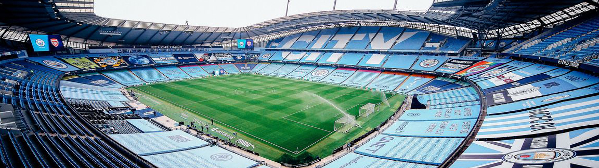

Etihad
Etihad Stadium: The Home of Manchester City
The Etihad Stadium, located in Manchester, is the iconic home of Manchester City Football Club. With its modern design, electrifying atmosphere, and rich history, it stands as a symbol of the club's success, ambition, and unwavering support.
A State-of-the-Art Venue
The Etihad Stadium is a state-of-the-art sporting facility, designed to provide the ultimate fan experience. Its sleek architecture, modern amenities, and excellent facilities make it one of the premier stadiums in the world.
A Capacity to Inspire
The stadium has a seating capacity of approximately 55,017 spectators, offering a vibrant and energetic atmosphere for every match. The cheers and chants from the passionate City fans reverberate throughout the stadium, spurring on the team to achieve greatness.
A History of Triumphs
The Etihad Stadium has been witness to Manchester City's glorious moments. From winning domestic league titles to capturing domestic and international cups, it has been the stage for the club's achievements and the celebration of its talented players.
A Home for Footballing Legends
Manchester City's success has attracted some of the greatest footballing talents to grace the Etihad Stadium. Players such as Sergio Agüero, Vincent Kompany, and David Silva have showcased their skills and left an indelible mark on the club's history.
An Engaging Fan Experience
Attending a match at the Etihad Stadium is more than just watching football; it is a captivating experience. From the pre-match buzz outside the stadium to the incredible sight of the players in action, every moment is filled with excitement and passion.
Community and Connectivity
The Etihad Stadium serves as a hub for the local community, providing a gathering place for fans and offering various initiatives to engage with supporters of all ages. It represents Manchester City's commitment to its fans and the city it calls home.
A Beacon of City's Identity
The Etihad Stadium is not just a sporting arena; it is a symbol of Manchester City's identity and ambition. It embodies the club's desire for success, its dedication to entertaining football, and its relentless pursuit of greatness.
- Manchester - England.
- 55,017 Spectators.
- Fifth biggest Stadium in England.